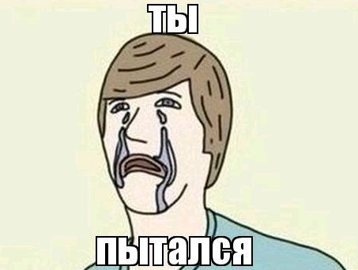

Почему я не возьму тебя к себе в команду по итогам технического интервью?

Пятый год я провожу технические собеседования. Обычно — в команде из трёх человек: я как техлид и два разработчика. Как мы оцениваем кандидата? Здесь хочется сломать очередное копьё на изъезженную тему.
Интервью — это не бинарный тест, где за каждый ответ можно поставить 0 или 1. Мы оцениваем кандидата комплексно: знания по разным темам, опыт, ход рассуждений, коммуникацию, умение признавать пробелы, общую адекватность, перспективность и то самое субъективное «хотел бы я работать с этим человеком в одной команде?».
Если кандидат однозначно слабый или сильный, то решение очевидно.
Самые сложные случаи — пограничные, а их — к сожалению или к счастью — большинство.
Вот тут, как мне кажется, основную роль начинает играть текущий контекст каждого из интервьюеров. Но не столько настроение, усталость или самочувствие. Это как раз обычно уравновешивается: редко бывает, что все трое одновременно не выспались, приболели и не выпили любимую капучинку на кокосовом.
Гораздо сильнее влияет общий контекст команды. Например, история последних собеседований.
Если перед тобой было несколько сильных кандидатов, ты можешь выглядеть слабее на их фоне. Даже если сам по себе ты неплох. Они быстрее отвечали на похожие вопросы, увереннее рассуждали, лучше структурировали опыт — и невидимая планка немного сдвинулась вверх.
Если перед тобой было несколько слабых кандидатов, эффект может быть обратным. После серии отказов кандидат, который уверенно держится на своём уровне, воспринимается почти как подарок судьбы. Внутренний голос уже шепчет: «Может, хоть кого-нибудь возьмём?» — и тут приходит человек, который действительно что-то знает.
А если кандидатов давно не было, то включается классическое: на безрыбье и джун — синьор. Шучу. Но оценить хорошего кандидата на полуровня выше в таких контекстах действительно проще. Junior+ "внезапно" становится middle, middle — middle+ и так далее. При условии, что человек уверенно закрывает предыдущий уровень.
Получается ли, что решение зависит не только от кандидата? Да, в какой-то степени. Мы всё равно понимаем, подходит нам человек или нет. Хотим ли мы с ним работать. Есть ли у него потенциал. Но когнитивное искажение никуда не исчезает: у каждого интервью есть невидимая точка отсчёта, и она не зависит от самого кандидата. Поэтому рекомендация кандидатам — не бояться разового отказа.
Как сохранять объективность интервьюерам? Простой рецепт — всё же подключать математику. Каждый из интервьюеров по ходу собеседования оценивает грейд кандидата по общему списку критериев, а в конце высчитываем среднее арифметическое.
Ещё из способов — иногда менять состав группы на интервью: подключать людей из других групп, перемешивать сложившиеся пары/тройки, ходить на интервью друг к другу для кросс-опыления. Этот рецепт заметно сложнее реализовать из-за конфликтов встреч в календарях.
А как вы справляетесь с проблемой объективной оценки кандидата?
← Назад к списку статей